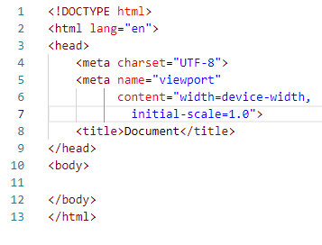

Язык HTML - начало
Язык HTML - это основа web сайтов, с его помощью создается каркас страницы, которую видно в браузере.
Для написания кода я выбрала бесплатный редактор Visual Studio Code.
Первая веб-страница сайта имеет название index.html, т.к.
большинство веб-серверов по умолчанию открывают именно его. Создаем файл с таким именем, не забывая набрать
расширение.
Его содержимое можно набрать вручную, зная HTML теги
или создать с помощью Em: набирает ! и жмем Tab (клавиатура должна быть на латинской раскладке).
На выходе получаем файл готовой структуры, которую можно заполнять
HTML теги - это специальные команды для браузера, которые строятся по принципу: уголок <имя тега> обратный
уголок. Оно состоит из английских букв и цифр.
Большинство тегов парные - открывающий тег < и закрывающий >.
Разница между ними в том, что в закрывающем теге после уголка стоит слеш /.
Все, что попадает между открывающим и закрывающим тегами, подпадает под
воздействие данного тега. Дальше по тексту теги будут указываться без уголков.
Имена и атрибуты тегов можно писывать в любом регистре.
Теги в HTML-документе имеют иерархическую структуру – теги вкладываются друг в друга
При написании кода надо соблюдать следующие правила:
- Соблюдать вложенность парных тегов, то есть закрывающая часть внутреннего тега должна встретиться в тексте
раньше, чем закрывающая часть внешнего тега.
- При отображении текста в браузере учитывается только один пробел, даже если в HTML-коде подряд идут
несколько пробелов или переносов строк
- Вложенный тег лучше всего начинать писать на новой строке с отступом в одну табуляцию
от начала внешнего тега. Форматировать код можно либо вручную с помощью клавиш Tab
(сдвинуть текущую строку на одну табуляцию вправо) и Shift+Tab (сдвинуть текущую строку на одну табуляцию
влево), либо с помощью функции автоформата Shift+Alt+F
Структура файла (формат пятой версии языка HTML)
|  |
- <!DOCTYPE html> - Начало любого кода. Определяет стандарт языка, по которому будет
обрабатываться данный код
- <html>...</html> - Контейнер, который заключает в себе все содержимое
веб-страницы, включая теги
Атрибуты
- lang - Указывает язык, на котором написан текст. Браузер использует его
для правильного отображения некоторых символов. (lang="код языка",значения "en"/"ru").
Значения обязательно должно быть "ru" <html lang="ru">
- title - Добавляет поясняющий текст на веб-страницу в виде всплывающей подсказки,
которая отображается, когда курсор мыши задерживается в окне веб-страницы
(title="текст")
- <head>...</head> - Голова документа, которая содержит его описание
Теги для описания документа
- <body>...</body> - Тело документа, которое содержит весь код. Предназначен для
хранения содержания веб-страницы (контента), отображаемого в окне браузера.
К такой информации относится текст, изображения, теги, скрипты JavaScript и т.д.
Атрибуты
- scroll - Прокрутка в окне браузера, когда содержание веб-страницы превышает
размер текущего
окна (scroll="yes | no"). По умолчанию - "yes".
|
Все теги можно поделить на несколько видов